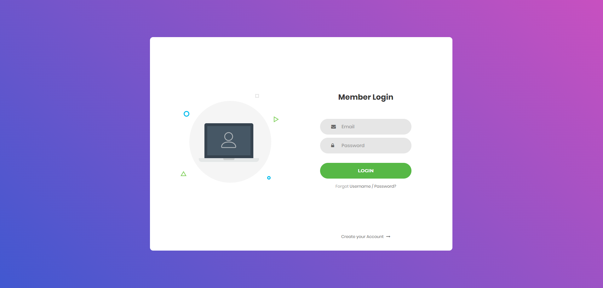
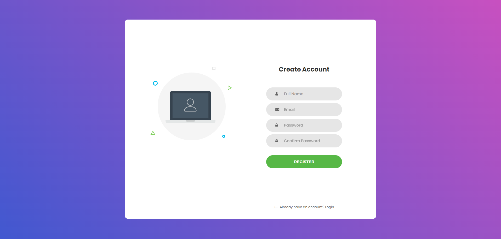
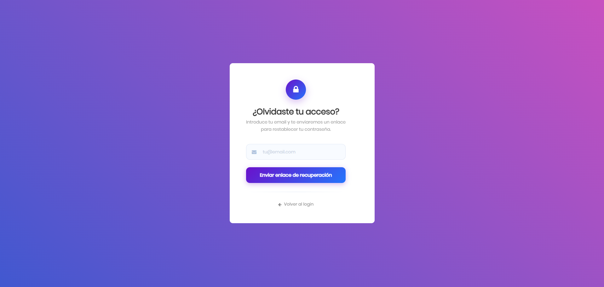
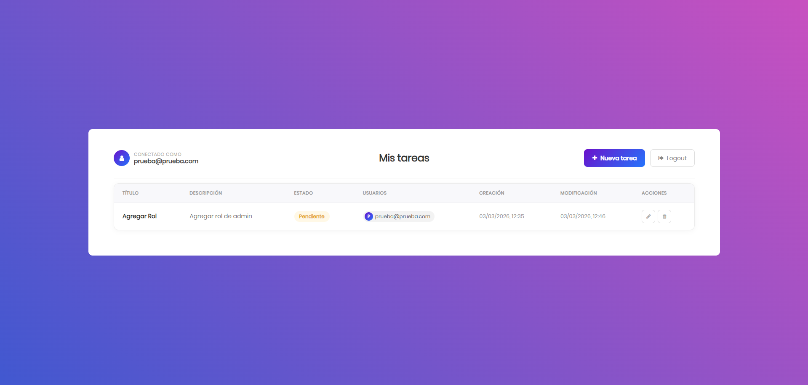
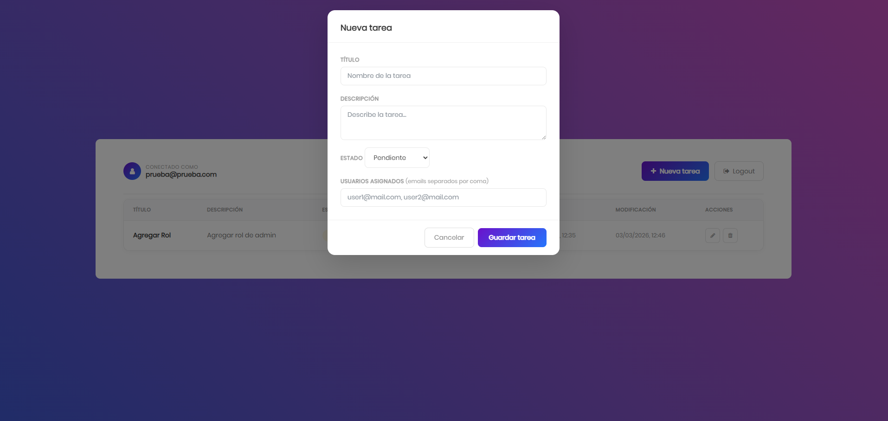
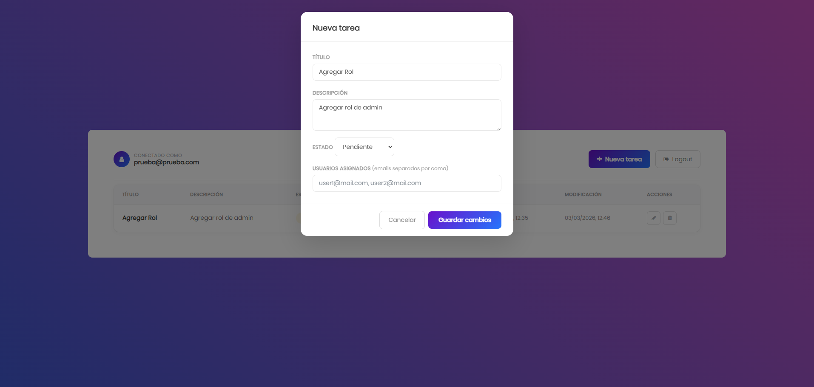
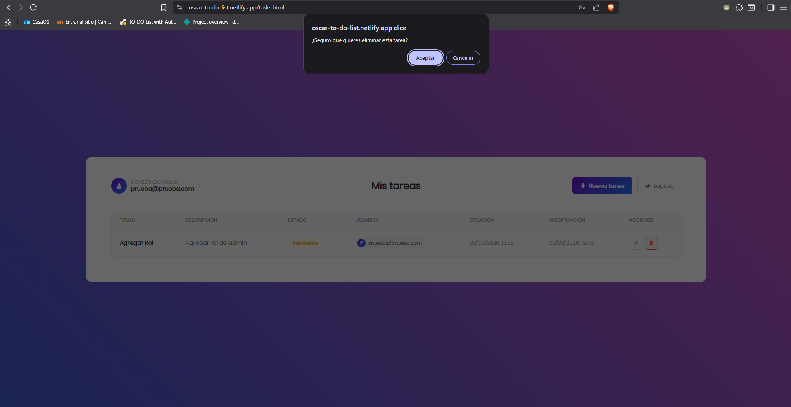

TO-DO List
Repositorio de GitHub TO-DO ListAplicación web fullstack de gestión de tareas con sistema de autenticación propio. El usuario puede registrarse, iniciar sesión y gestionar sus tareas de forma completamente personalizada. Cuenta con un backend desarrollado en Node.js que persiste los datos en una base de datos, convirtiéndolo en el primer proyecto fullstack completo del portfolio.
Tecnologías utilizadas
- Frontend: HTML5, CSS3, JavaScript (ES6+), Bootstrap
- Backend: Node.js, Express.js
- Seguridad: Helmet (cabeceras HTTP seguras), Express-rate-limit (protección contra abuso de la API)
- Persistencia: Base de datos para almacenamiento de usuarios y tareas
- Despliegue: Frontend en Netlify, Backend en Render
Funcionalidades
Autenticación de usuarios
La aplicación cuenta con un sistema de autenticación completo. El usuario puede iniciar sesión con sus credenciales desde la pantalla de login.

Si aún no tiene cuenta, puede registrarse introduciendo sus datos en el formulario de registro.

En caso de haber olvidado las credenciales, la aplicación dispone de una pantalla de recuperación de acceso.

Gestión de tareas
Una vez autenticado, el usuario accede al listado de sus tareas, donde puede visualizar todas las pendientes y completadas.

Puede crear nuevas tareas a través del formulario de creación.

Las tareas existentes pueden editarse en cualquier momento para actualizar su contenido o estado.

El usuario también puede eliminar tareas, con una confirmación previa para evitar borrados accidentales.

Backend seguro y despliegue en producción
El servidor está protegido con Helmet, que configura automáticamente las cabeceras HTTP frente a vulnerabilidades web comunes, y con Express-rate-limit, que previene ataques de fuerza bruta limitando las peticiones por cliente. El proyecto está desplegado en un entorno real con el frontend en Netlify y el backend en Render, comunicándose mediante API REST.